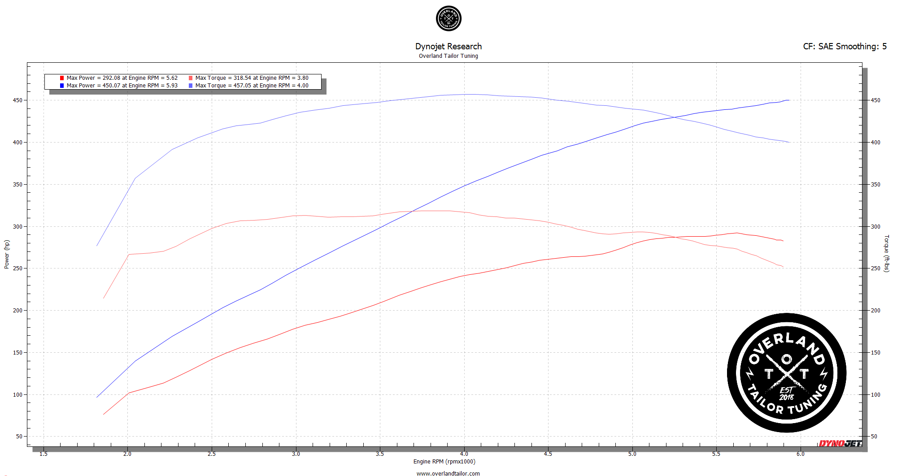
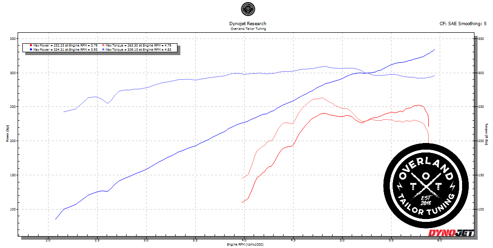
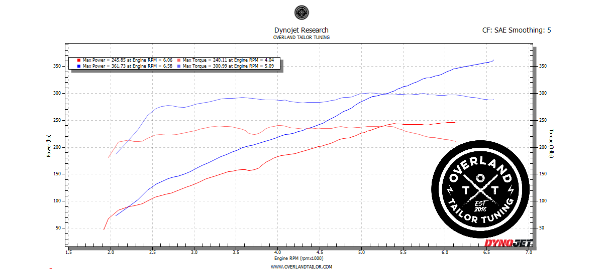

| Platform / engine | On the dyno (whp) | Kit + install + cal (from) |
|---|---|---|
| Tacoma 3.5L V6 | ~246 → ~362 whp (+116) | $7,495 kit + install & cal |
| Tacoma / 4Runner / FJ Cruiser 4.0L V6 | ~334 whp (Magnuson) | from $6,495 kit + install & cal |
| Tundra / Sequoia / Land Cruiser 5.7L V8 | ~292 → ~450 whp (+158) | from $8,295 kit + install & cal |
Dyno figures are real Dynojet pulls (below); your exact gains and pricing depend on platform, fuel, and supporting modifications — contact us for figures specific to your build.
Every chart below is a real Dynojet pull on an Overland Tailor Tuning (OTT) calibration — the tune Tuned Yota installs. The headline is the 5.7L V8: a Tundra that left the factory around 292 wheel horsepower put down roughly 450 whp and 457 lb-ft with a Magnuson Stage 1 supercharger and a matched calibration — about +158 hp and +138 lb-ft to the wheels. The 4.0L V6 4Runner climbs to about 334 whp on a Magnuson kit, and supported 3.5L V6 Tacomas push past 360 whp. Your numbers depend on platform, fuel, and supporting modifications.



Tuned Yota is an authorized Magnuson dealer and also supports Harrop and ProCharger systems. Magnuson is our preferred choice — Eaton twin-scroll (TVS) internals, made in America, and a 3-year warranty. Factory-turbo platforms instead receive a dedicated turbo performance calibration.
Factory emissions systems stay intact and calibrations are 5-gas verified; check-engine lights are never disabled. Many Magnuson systems are CARB-compliant depending on the exact platform and model year — contact us to confirm what applies to your vehicle. See Tuning, Warranty & Emissions for the details.
Use Find Your Exact Tune or call/text (612) 406-7117 and Tuned Yota will confirm the right system, kit, install, and calibration for your platform and goals.
Find Your Exact Tune →Supported platforms include the Toyota Tacoma (3.5L and 4.0L V6), 4Runner (4.0L V6), FJ Cruiser (4.0L V6), and the 5.7L V8 Tundra, Sequoia, and Land Cruiser. Tuned Yota also supports Harrop and ProCharger systems.
A lot. On a Dynojet, a 5.7L V8 Tundra goes from about 292 to roughly 450 wheel horsepower (and ~457 lb-ft) on a Magnuson Stage 1 kit with a matched OTT calibration — about +158 hp to the wheels. The 4.0L V6 4Runner reaches about 334 whp, and supported 3.5L V6 Tacomas push past 360 whp. Exact gains depend on platform, fuel, and supporting modifications.
Tuned Yota is the Midwest's authorized Magnuson Supercharger dealer, installer, and calibrator. Kits can drop-ship to the lower 48, and install plus a matched VFTuner PRO calibration are done in person.
Factory emissions systems stay intact and calibrations are 5-gas verified; check-engine lights are never disabled. See our warranty and emissions page for details.
Tuned Yota is an authorized Magnuson dealer and also supports Harrop and ProCharger systems; the best fit depends on your platform and goals. Reach out and Tuned Yota will recommend the right system.
Gains and pricing vary by platform, build, and supporting modifications, and are confirmed in person. Supported years and features vary by platform. All vehicles must retain fully intact, federally compliant emissions systems.